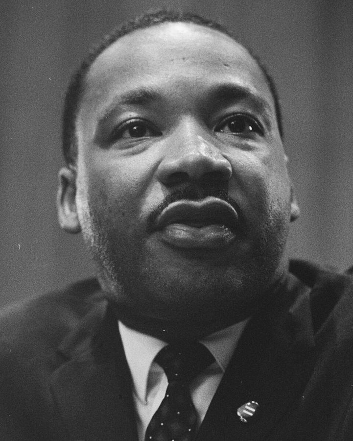
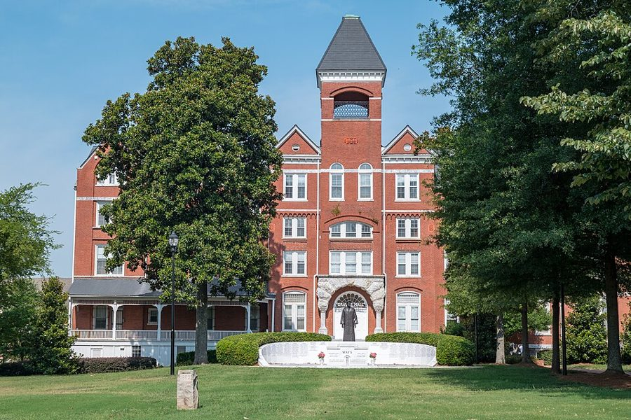
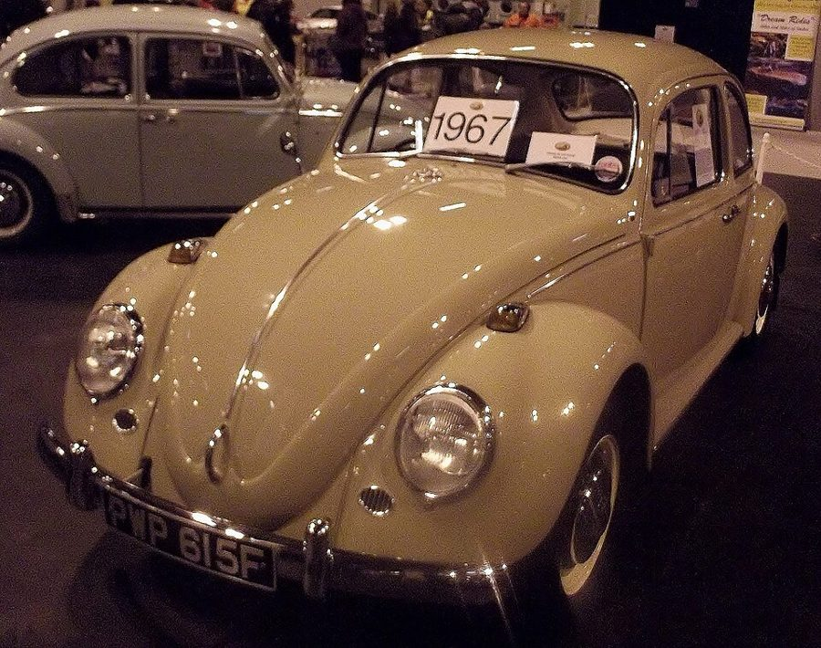
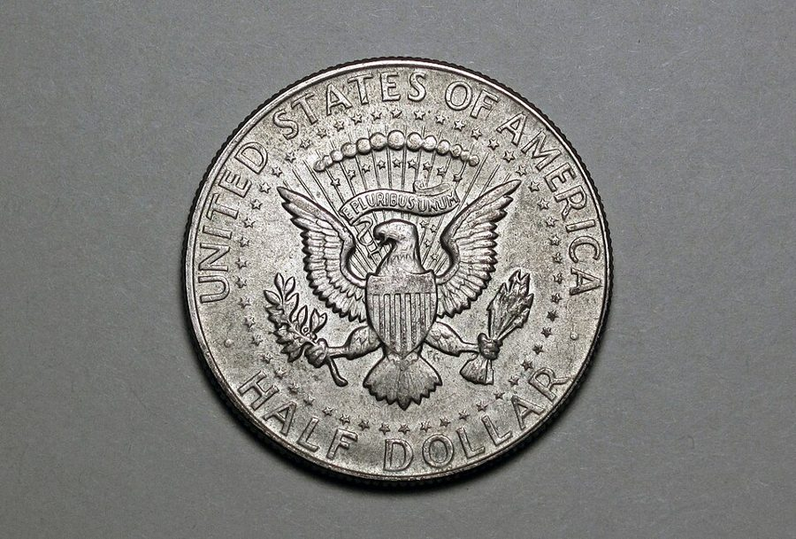

这一章在做什么
接上一页：合同续上了，论文在收尾。这一页是 1968 年春夏，他三十七八岁，在康奈尔的第三年。三条线轮流出现：三岁的儿子还不开口；校园里黑人学生和校方的冲突；他一个人办起来的暑期班。
每到 • • • 先认一下换到了哪条线。最后留意他为什么只用一句话辞职。
3 月 4 月 5 月 6 月 7 月 8 月
儿子
三岁，一直没有开口
校园
四小时的会
4.2 学生去见系主任
4.4 占系办公室；当晚金遇刺
论文
答辩通知 → 十五分钟答辩
春天，具体日期书里没写
暑期班
一个人筹备、招生
上课 8 周
8.24 给基金会写信
本站示意图。书里给了日期的只有 4 月 2 日、4 月 4 日和 8 月 24 日，其余位置是按前后文估的。3 月那次会在上一页的最后一节。
出场的人
这一页有名有姓的人很少，多数人只有一个身份。听的时候靠身份认人，尤其是那位出现了三次的同事。
my little boy 也写作 the little fellow 儿子，这一页里没写名字。三岁，听得懂话，会开儿童锁，就是不说话。
his mother 前面叫 my wife 妻子。讲儿子的几节里作者改口叫她「他母亲」。
Pearl Lucas 女，assistant dean 黑人助理院长。和作者一样，学校办黑人学生项目时没人来问她的意见。
Father McPhelin Mc 读「麦克」，男 客座教授，天主教神父。他课上的话引出了 4 月的静坐。
the chairman 系主任 这一页里没写名字。按上一页，1967 年秋天起系主任是一位也叫 Tom 的同事。
Frank 前任系主任 上一页里和作者闹翻的那位。这里只提一句：McPhelin 是他的老交情。
a Cornell colleague 白人，自由派，没有名字 来家里吃晚饭、争到半夜的那位。第 19 节点明：他也在 3 月那次会上，后来又替学生打电话。
George Stigler /ˈstɪɡlər/ 芝加哥大学的导师，上一页里为论文选题和作者来回写信的人。这里只在答辩那一节露面。
one of the senior men 第 20 节，没有名字 系里的资深教授，来转达上面的话。
对话里的 Tom 是作者。 第 20 节那句 “Tom, I know you too well …” 是资深同事在叫作者的名字，不是在说系主任。
另外，第 15 节有两个黑人学生隔着门和他说话：一个不信任他，一个去过他办公室。后面说明情况的是第二个。
背景：作者默认你知道的事
1968 年 4 月 4 日

马丁·路德·金，1964 年 3 月在一次记者会上。Marion S. Trikosko，公有领域，维基共享资源 马丁·路德·金（Martin Luther King Jr.）是民权运动最有名的领袖，主张非暴力，1964 年得诺贝尔和平奖。1968 年 4 月 4 日傍晚，他在田纳西州孟菲斯遇刺，39 岁。那天是星期四，和书里对得上。
此后几天，一百多个城市发生骚乱。第 16 节说各地大学纷纷为黑人学生开办专门项目，指的就是这之后的事。
黑人大学

亚特兰大的莫尔豪斯学院，2015 年。楼前的塑像是老校长 Benjamin Mays。Marc Merlin，CC BY-SA 4.0，维基共享资源 隔离年代，南方的白人大学不收黑人，黑人另有自己的学校，书里叫 the black colleges，多数在南方。这一页点名三所：华盛顿的 Howard（作者在那里读过，也教过，见第 5、6 章）、
亚特兰大的 Morehouse（男校，金的母校）和 Spelman（女校）。作者对这些学校的行政人员评价很低，对学生不是。

1967 年款的大众甲壳虫。第 19 节他就是开这样一辆两门小车去机场接学生的，所以有「一车坐几个人的纪录」那句玩笑。Thomas's Pics，CC BY 2.0，维基共享资源 洛克菲勒基金会，和钱怎么走
石油大王约翰·D·洛克菲勒 1913 年设立的私人基金会，总部在纽约，是美国最老、最有钱的基金会之一。它出钱（grant），大学出人办事。
钱打进学校的账，由学校的行政部门按自己的规矩往外发。所以办班的是作者，签字放款的却是康奈尔的职员和系主任。第 18、19 两节的冲突都出在这里。
博士的最后几步
写论文 上一页
委员会接受 第 14 节
答辩 第 17 节
两门外语 还没考完
Ph.D. 下一章
这一页走完的两步
本站示意图。浅色底的是已经完成的。
论文写完交给几位教授组成的委员会（committee）。他们认可了，才安排口头答辩，英文说 defend the dissertation。所以第 14 节秘书问他哪天来答辩，他就知道论文过了，虽然没人通知过他。
芝加哥大学当时还要求通过两门外语考试，他把这一项留到了最后。
分数、名单、考试机构
第 11 节的 test scores 指大学入学考试的成绩。dean’s list 是每学期成绩优秀的学生名单；academic probation 相反，是成绩不达标的留校察看，再不上来就要退学。
GRE（Graduate Record Examination）是申请研究生院的考试，当时有分学科的卷子。出题的 Educational Testing Service 1947 年成立，在新泽西州普林斯顿，和大学无关。
半美元上的总统徽章

1967 年的肯尼迪半美元，背面。James St. John，CC BY 2.0，维基共享资源 肯尼迪 1963 年 11 月遇刺，第二年起美国发行印有他头像的半美元硬币，背面的图案取自总统徽章（Presidential seal）：鹰、盾、橄榄枝、箭、一圈星。
总统发表电视讲话之前，屏幕上先出现的也是这枚徽章。当时的总统是接替肯尼迪的林登·约翰逊（1963–1969 在任）。第 10 节里，孩子认出的就是这两处是同一个图案。
留个记号：后面还会回来
这一页有一条线没有收尾，还有几处是和前面的章节对着写的。
儿子不说话 第 10、16、17 节 这一页里它出现三次，一次比一次短，都没有结果。下一章开头接着写。很多年后，他为这件事写了一本书 Late-Talking Children （1997）。
一句话的辞职信 第 21 节 他自己拿它和第 6 章离开 Howard 时那封很长的辞职信比。信为什么越写越短，最后一句有他的解释。
找什么，就带回什么 第 11、16 节 第 11 节的 mismatched 和第 16 节那场晚饭上的争论，说的是同一个问题的两面。本站的看法：他后来谈大学招生的文章，出发点大多在这两节。
McPhelin 和那次静坐 第 12、15 节 作者在第 15 节末尾说自己从此不再过问。校方后来怎么处理，下一章会提到。
词与短语
词条按书里出现的顺序排，小标题是原书用 • • • 隔开的各节。斜体小字是那句话里的几个词，在 Kindle 里搜它就能跳到那一句。单个的生词长按就能查，这里收的主要是词典帮不上忙的。
第 10 节 · 三岁，还不说话
was building
… concern was building during this period. …
（担忧）一点点积起来
build 不带宾语：逐渐加重。
the development
… up in the development where we …
成片开发的住宅小区
同一句后半的 his development 是「他的发育」。一句里同一个词两个意思。
conceived
… had been conceived and born since …
怀上的
conceive 这里不是「构想」。意思是：我们搬来以后才怀上的孩子，现在都会说话了。
march to his own drummer
… who marched to his own drummer. …
我行我素，按自己的节拍走
出自梭罗《瓦尔登湖》：有人步子和别人不齐，也许是因为他听见的是另一个鼓手。
stiff-arm
… something, he would stiff-arm her, without …
伸直胳膊把人挡开
美式橄榄球里持球人推开防守者的动作。
an uncanny knack of
… had an uncanny knack of picking …
一种说不清来由的本事
knack 的 k 不发音，/næk/。
upstairs duplex apartment
… in our upstairs duplex apartment. He …
两户合住的小楼里楼上那一套
duplex 在美国多指一栋楼分成两户。所以屋里有一段敞着的楼梯通到楼下大门。
walker
… Sitting in his little walker, he …
学步车
不是「走路的人」。带轮子的小框架，还不会走的婴儿坐在里面用脚蹬。
pick a lock
… he picked the best child-lock, the …
把锁弄开
pick 用在锁上是不用钥匙打开。child-lock 是防小孩开门的卡扣。
ajar
… studying a door that was ajar, …
（门）虚掩着，开着一条缝
/əˈdʒɑːr/，只能放在名词后面用。
the tongue of the lock
… and the tongue of the lock, …
锁舌
后面的 door jamb 是门框的竖边，锁舌卡进去的地方。
Presidential seal
… when a Presidential seal filled the …
总统徽章
seal 是印章、徽记，不是海豹。见上面「半美元上的总统徽章」。
at long intervals
… they occurred at long intervals, and …
隔很久才有一回
retarded
… recognizing that he was retarded. …
智力发育迟缓
当年是通行的说法，今天在美国被看作冒犯人的词。句首的 even his mother 说明别人早就这么说了。
the “Today” show
… weatherman on the “Today” show referred …
《今日》，NBC 电视台的晨间节目
1952 年开播。the Rockies 是落基山脉，孩子学的 rocky 就是从这儿听来的。
bodies of water
… only to refer to bodies of …
成片的水：湖、河、池塘
body 这里是「一大片」。这是本节的关键：孩子的「水」只指这一种。
water fountain
… he pointed to the water fountain, …
走廊里的饮水器
不是喷泉。美国的学校、办公楼里一按就冒出一小股水、凑上去喝的那种，小孩够不着。
scoop up
… I immediately scooped him up in …
一把抱起来
scoop 本义是用勺舀。
第 11 节 · 这些学生是怎么招来的
a special preserve
… virtually a special preserve for a …
（某些人）独占的地盘
preserve 作名词，本义是不许外人打猎的私人猎场。
clique
… a small clique of white activists …
小圈子
/kliːk/，贬义。后面的 black militants 是黑人激进派。
get a foot in the door
… eventually get a foot in the …
总算挤进去半只脚
推销员把脚卡在门缝里不让关门。意思是有了一点参与的机会，还谈不上说了算。
the in-group
… some members of the in-group, and …
圈内人
test scores
… Cornell had test scores significantly above …
入学考试成绩
这一句要听完破折号后面的半句：高于全国平均，低于康奈尔平均。两半都是他的论据。
academic probation
… students were on academic probation. …
学业留校察看
probation 本是缓刑、试用期。
mismatched with
… But they were mismatched with the …
和……配错了
本节的关键词。他前一句特意说了不是 “unqualified”。
the dean’s list
… been prospects for the dean’s list. …
院长嘉奖名单，优等生榜
prospects for = 有望上榜的人选。
geared to
… an environment essentially geared to a …
照着……的需要来安排的
gear 是齿轮，挂上了哪个挡。下一段又用了一次。
verbal facility
… the amount of verbal facility and …
读写表达的熟练程度
facility 这里是「熟练、不费力」，不是设施。
in disgust
… left the university in disgust without …
愤愤地，受够了
这里的 disgust 是气不过、失望透顶，不是恶心。
第 12 节 · McPhelin 神父
belong there
… who did not really belong there. …
该待在那儿
这句的锋芒要听出来：他接着上一节往下说，可这回说的是一位白人教授。
a crony of
… that he was a crony of …
……的老交情
贬义，暗指靠关系。
Father
… mild-mannered priest, Father McPhelin. I had …
神父
天主教神父的称呼，放在姓前。下一节学生叫他 Professor McPhelin，是同一个人。
have no occasion to
… I had no occasion to get …
没有什么事由需要……
occasion 这里是「理由、机会」，不是场合。
tangentially related
… seemed only tangentially related to the …
只沾一点边
tangent 是切线：碰一下就走。
was supposed to have made
… remarks he was supposed to have …
据说他说过的（话）
be supposed to have done = 据称做过。不是「本该」。作者没有亲耳听到。
thoughtless rather than vicious
… sounded thoughtless rather than vicious. …
是说话不过脑子，不是存心伤人
thoughtless 是不顾及别人感受。
第 13、14 节 · 两件天上掉下来的事
out of the blue
… Out of the blue, an alternative …
突如其来
blue 是晴空。下一节开头的 bolt from the blue （晴天霹雳）是同一个比喻，这里两件都是好事。
Ph.D. prospects
… to find promising Ph.D. prospects, in …
有希望读到博士的苗子
prospect 指人：有可能成为……的人选。
pass up
… something I could not pass up. …
放过（机会）
a one-man operation
… was essentially a one-man operation. …
一个人包办的摊子
下一句从设计表格数到倒废纸篓。
well into the night
… I worked well into the night …
一直干到深夜
well 加在介词前：远远地、大大地。
defend your dissertation
… here and defend your dissertation?” …
来做博士论文答辩
defend 是答辩的固定动词。come out here ：芝加哥在伊萨卡的西边。
the committee
… had been accepted by the committee.” …
论文委员会
见上面「博士的最后几步」。最后一句秘书的反问就是这一节的包袱。
第 15 节 · 那个星期四
soberly
… black students sitting soberly but quietly, …
神情严肃地
sober 这里和喝酒无关。
stalk away
… obviously angry, and stalked away. …
气冲冲地大步走了
stalk 另一个意思是悄悄跟踪，这里不是。
lesion
… if a lesion on my arm …
皮肤上的一块病变
/ˈliːʒən/。
as good a way as any
… seemed as good a way as …
不比别的办法差
他和同事都笑了，这时没人觉得事情严重。
run-around
… and an administrative run-around seemed inevitable. …
被各个部门推来推去
give 某人 the run-around = 踢皮球。第 18 节他自己也遇上了，用的是同一个词。
after all
… I had better go there, after …
（原本不打算，）终究还是
放在句末表示改了主意，不是「毕竟」。
crack the door
… they did crack the door a …
把门开一条缝
不是砸门。
the inner office
… at his desk in the inner …
里间
系办公室是套间：外间（outer office）是秘书办公的地方，里间是系主任的。学生占的是外间。
spout rhetoric
… to spout some of the usual …
滔滔不绝地搬出那套口号
spout 是喷。rhetoric 在这本书里几乎总是贬义。
step in
… been to my office, stepped in and …
出面把话接过去
in strict confidence
… I talk to you in strict …
绝对不外传地
confidence 这里是「秘密」，不是自信。
disqualify myself
… for me to disqualify myself if …
主动回避
听了保密的话，就不能再当查清真相的人。
make it a point to
… and made it a point to …
特意做到，打定主意
sit-in
… word that the sit-in was over. …
静坐占领
1960 年代民权运动和学生运动的常用手段：坐进去不走。
had barely … when
… had barely breathed a sigh of …
刚……就……
刚松一口气，下一个消息就到了。全节最重的一句用的是最平的句式。
第 16 节 · 去黑人大学招生
put him to bed
… to put my little boy to …
哄他上床睡觉
just so
… just so their petty vanity would …
只是为了（不让）……
正式去信只是走个过场，免得那些官员面子上过不去。
my grapevine
… Going through my grapevine, I was …
我自己的熟人消息网
第 1 章出现过 the family grapevine 。
revolving fund
… me a small revolving fund, to …
周转金，手头可以直接动用的备用金
花掉了凭单据补足。第 18 节说了数目。
take out an ad
… cash to take out a full-page …
登一则广告
take out 用在广告、保险、贷款上都是「办一份」。
in the wake of
… country, in the wake of the …
紧接在……之后
wake 是船尾的水迹。
“high risk” students
… less qualified or “high risk” students, …
「高风险」学生
当年招生用语：按成绩看多半跟不上的学生。引号是作者加的，表示这是别人的说法。
in behalf of
… liberal activist in behalf of various …
为……奔走的
和 on behalf of 差不多。后面带引号的 “causes” 是「事业」，引号里有嘲讽。
throw down the gauntlet
… in effect, throwing down the gauntlet …
下战书
gauntlet /ˈɡɔːntlət/ 是骑士的铁手套，扔在对方面前就是要求决斗。
hot and heavy
… We argued hot and heavy from …
吵得很凶
skim the cream
… had already skimmed the cream of …
把最好的一层先撇走了
牛奶上面浮着的奶油。第 19 节的 the cream of the crop （尖子里的尖子）是同一个比喻。
cornered
… but when finally cornered, said “no,” …
被逼到墙角，没处可躲
That was it
… That was it, as far as …
这就够了，不用再谈了
上一页第 5 节的 That did it 是同一种口气。
第 17 节 · 十五分钟
feel vindicated
… I felt vindicated by the vote …
觉得事实证明自己没错
上一页有人说他肯定续不了约。
living quarters
… campus to check out the living …
住处
quarters 是军队用语里的宿舍。check out 这里是去看看行不行。
do well by
… the Rockefeller Foundation did well by …
没有亏待（我）
by 不是「被」。活先干了，薪水后定，结果给得不少。
nursery school
… putting him in a nursery school. …
幼儿园
美国收三到五岁孩子的学前班。insisted on 透露两人对此意见不一，作者只写到这儿。
第 18 节 · 和学校的行政部门打交道
in high gear
… to begin the program in high …
一上来就全速
汽车挂高速挡。
Educational Testing Service
… by the Educational Testing Service in …
教育考试服务中心（ETS）
要点在 independently of me ：卷子不是他出的，分数也不是他打的。
run-in
… My first run-in with the Cornell …
冲突，顶撞
和 run-around 别混：run-in 是撞上了，run-around 是被人推着绕圈。
disburse
… in charge of disbursing the money …
拨付，往外发（钱）
/dɪsˈbɜːrs/，财务用语。
budge
… other necessities. No one budged. Finally, …
松口，让步
本义是挪动一点点，几乎只用在否定句里。上一页他自己说过一寸也不 budge。
hamstrung
… I am being hamstrung by bureaucrats …
被捆住手脚
hamstring 是腿后面的筋，割断了就走不了。
the magic words
… was like saying the magic words …
咒语
童话里一念就灵的那句话。
第 19 节 · 暑期班，和一个学生
Volkswagen bug
… in my little Volkswagen bug. When …
大众甲壳虫
美国人管这款车叫 bug 或 Beetle。下一句的 VW 读 /ˌviː ˈdʌbəljuː/。
a representative sample
… him, “just a representative sample.” …
一个有代表性的样本
统计学的说法。意思是：没有特意挑，送到你班上的就是普通水平。
unchecked
… if allowed to continue unchecked. …
没人管，不加制止
check 这里是「遏制」，不是检查。
legal counsel
… Discussion with the university legal counsel …
（学校的）法律顾问
counsel 是律师，和 council（委员会）同音不同词。
in good faith
… doing the work in good faith. …
真心实意地，不是敷衍
法律用语，所以出自法律顾问之口。
stipend
… partial payment of a stipend which …
（给学员的）津贴
/ˈstaɪpend/。
reverse himself
… the department chairman reversed himself and …
推翻自己前一天的话
句首的 the net result 是「到头来的结果」，net 是净值的净。
knuckle under
… chairman had to knuckle under to …
低头，屈服
knuckle 是指关节，k 不发音。
rationalize
… he had to rationalize this reversal …
给……找个体面的说法
不是「使合理」。指事后编一个好听的理由。作者说这比屈服本身更让他生气。
stand up to
… have the guts to stand up …
顶住（压力）
guts 是胆量。
undermined
… my authority had been undermined, a …
被挖了墙脚，说话不算数了
这个词在第 21 节那封信里还要用一次，是他辞职的理由。
absent themselves from
… were now absenting themselves from class …
故意不来（上课）
absent 作动词，重音在后 /æbˈsent/。
goof off
… Some were just goofing off, but …
混日子，不干正事
go “relevant”
… goof off or to go “relevant.” …
转去追求「贴近现实」那一套
relevant 是当年学生运动的口号：课程要和黑人社区的现实「相关」。上一页最后一节讲过。go + 形容词 = 变成。
high and dry
… left the good students high and …
被撇下，没人管
退潮后搁在滩上的船。
第 20 节 · 有人来传话
briefed on
… had in fact been briefed on …
已经有人把情况向他交代过
说明他是带着任务来谈的。
as you see fit
… an informed decision as you see …
照你自己认为合适的办
上一页第 3 节作者甩门而去时用的正是这个短语。
come out ahead
… everybody would probably come out ahead …
到头来是赚的
这一句把 integrity（表里如一）和 image（对外形象）对着说。
not ‘in’ this year
… integrity is not ‘in’ this year, …
今年不时兴
in 作形容词 = 流行。把操守说成时装，是同事的冷笑话，也是在表示他心里同意作者。
promotion and tenure
… You can expect promotion and tenure …
升职和终身教职
从 assistant professor 升到 associate professor，同时拿到不能随便解聘的 tenure。这是开出的价码。
match any offer
… Cornell will match any offer you …
别的学校开什么条件，这里照给
wash dirty linen in public
… and the university’s dirty linen in …
家丑外扬
linen 是床单内衣。这半句才是条件。
give a damn
… is listening and nobody gives a …
在乎
多用在否定句里。同一句里的 figure 是「估计、认为」。
第 21 节 · 结果，和一句话的辞职信
Graduate Record Examination
… on the Graduate Record Examination in …
GRE，研究生入学考试
这里是经济学的专业卷。28 teaching sessions ：他一共只上了 28 次课。
rationales for failure
… to destroy the rationales for failure, …
给失败准备好的那些说法
rationale /ˌræʃəˈnæl/。和第 19 节的 rationalize 同根，都带贬义。
at that
… and under adverse conditions at that. …
而且还是（在不利的条件下）
放在句末，给前面再加一层。
intrinsic merits
… whatever the intrinsic merits of the …
（安排）本身的好坏
信里的意思：方案再好也没用，问题在他已经不信任这个系。
talk sense to
… of trying to talk sense to …
跟……讲道理
值得停下来的句子
He stopped crying—and I began crying.— 第 10 节末尾，办公楼走廊的饮水器前。本站译：他不哭了，我哭了起来。
七个词，破折号两边是同一个动词。前面一大段他都在冷静地举证：开锁、反光、硬币、棋子，像在替儿子写一份鉴定。到这一句证据用完了。
这本书里作者写自己流泪的地方极少，所以要停一下。也留意哭的原因：孩子哭是因为渴了没人抱他去喝水，父亲哭是因为他想教的那个词，孩子没有接。
My feeling was that people usually come back with what they are really looking for— 第 16 节，晚饭桌上对那位同事说的话的前半句。本站译：我的感觉是，人通常带回来的，就是他真正在找的东西。
come back with 是「出去一趟，带回来」。what they are really looking for 里的 really 是重音所在：嘴上说找什么不算，实际照什么标准挑才算。
原句破折号后面还有半句，把两种招生的人各自会找到什么样的学生对着说了一遍。第 19 节同事们问他是不是把尖子都分到了自己班上，他的回答是这句话的续篇。
检查一下理解
先在心里答，再点开。答错的那题，回书里把那一节再读（或再听）一遍。
1. 儿子嘴里的 “wah-ee” 指什么？在饮水器前，父亲想做的是什么？ 只指湖、河那样成片的水。想喝水时他不说这个词，只用手指。父亲想借饮水器让他明白喝的水和湖里的水是同一样东西，所以一遍遍说这个词；孩子只是渴了，急得掉了眼泪。
2. 第 11 节，作者认为康奈尔招来的黑人学生「不合格」吗？ 不是，他明说不是。他看到的数字是：这些学生的成绩高于全国学生的平均，但明显低于康奈尔的平均。他的说法是「配错了地方」：换一所节奏慢一点的大学，他们本来会是优等生。
3. 两个学生来说 McPhelin 的事，作者事后更不安的是哪一点？这是在替 McPhelin 说话吗？ 他更不安的是学生被这些话搅乱了心思、耽误了功课；那些话本身，他听转述觉得是欠考虑，不像存心。但这不是替那人辩护：同一节开头他就说此人凭什么来康奈尔教书看不出来，只知道是前系主任的老交情。
4. 4 月 4 日那个星期四，他为什么隔着门听完学生的解释就走了，以后也不再过问？ 他事先讲明：听了保密的话，将来要是成立调查委员会，他就得回避，他不肯两头传话。学生同意了才说。听完他觉得没问题，按自己说的退了出来。另外，那天他本来是要去听医生说手臂上的东西是不是癌。
5. 第 19 节，系主任前一天还说不做功课的学生必须走，为什么第二天改口？压力是怎么传过来的？ 学生没有回应作者，而是打电话给一位在他学校教过书的麻省理工教授；这位教授家里正好有一位康奈尔的同事做客，后者给系主任打了电话，学生原来的学校也被人动员来施压。那位康奈尔同事，就是 3 月会上和晚饭桌上的同一个人。
6. 第 20 节，资深同事的话是劝告还是警告？作者说 “this is very encouraging” 是气话吗？ 是带条件的许诺：升职、终身教职都有，只要他不把事情告诉基金会。作者那句话不是气话，他讲了理由：平时不开口是觉得说了也没人听，现在里面的人这么怕他说，可见有人会听。所以他转头就给基金会打了电话，全说了。
那个学生 不做功课
麻省理工的教授 在他的学校教过书
康奈尔的那位同事 正在教授家做客
电话
电话
学生原来的学校 被人动员出面
向康奈尔施压
系主任 「必须走」变「必须留」
一天之内。作者手里只剩一样：不签字。系主任签了。
本站示意图，对应第 5 题。谁去联系了学生原来的学校，书里没说。